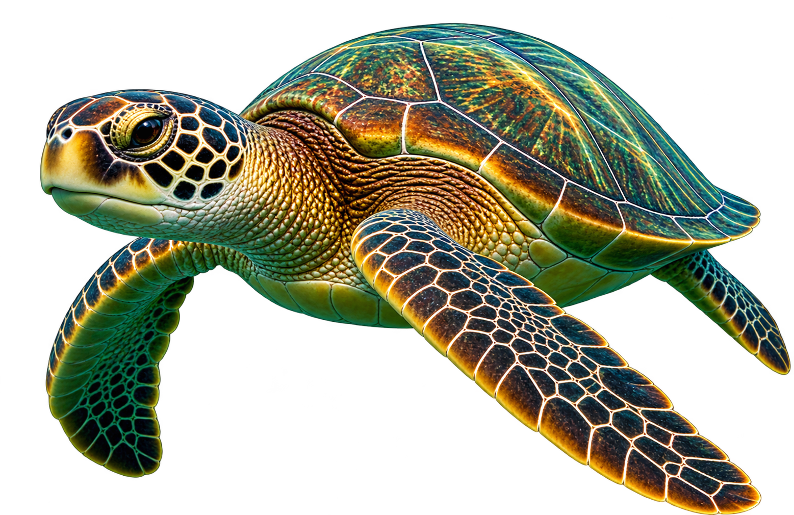
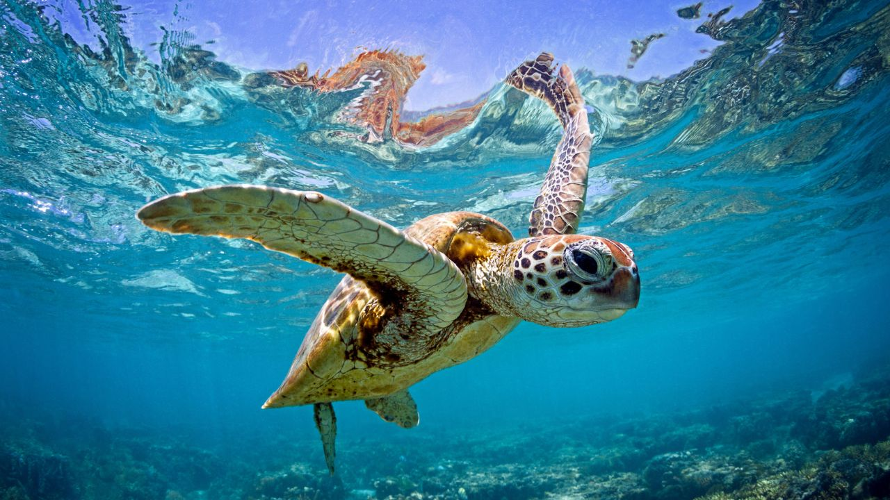
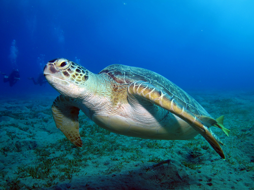
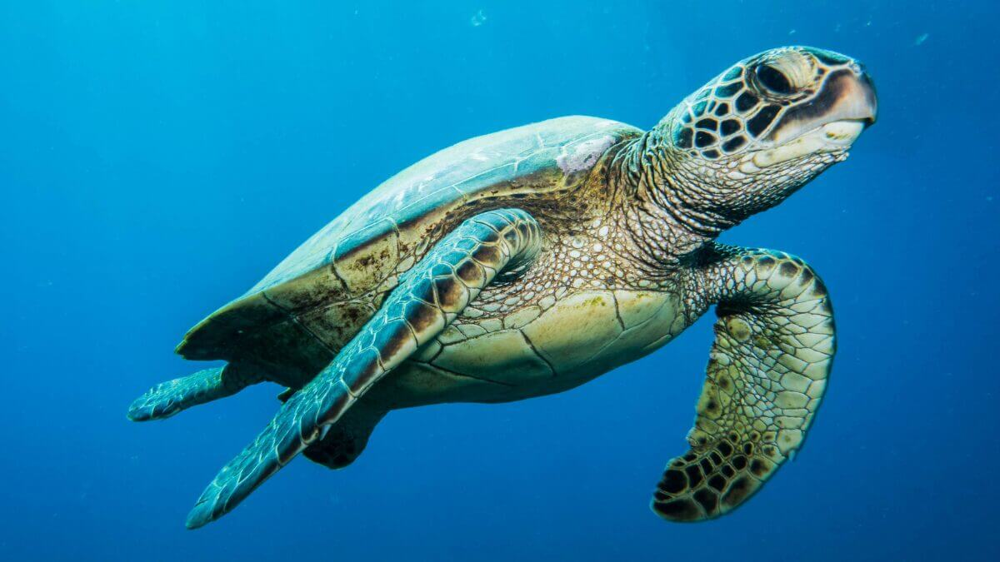

Tartaruga Verde
Chelonia mydas
A tartaruga verde recebe esse nome por causa da coloração esverdeada da gordura e da cartilagem. É uma das espécies mais encontradas em águas tropicais e subtropicais.

Curiosidades
Alimentação
São herbívoras e se alimentam principalmente de algas e ervas marinhas.
Tempo de vida
Podem viver mais de 80 anos na natureza.
Grandes viajantes
Migram milhares de quilômetros entre áreas de alimentação e desova.
Nascimento
As fêmeas retornam à praia onde nasceram para desovar. Os filhotes vão sozinhos para o mar ao nascer.
Importantes para o ecossistema
Ajudam a manter os oceanos saudáveis, controlando o crescimento de algas nas áreas marinhas.
Habitat
Águas rasas costeiras, recifes de coral e pradarias marinhas.


Você Sabia?
As tartarugas verdes ajudam a manter as pradarias marinhas saudáveis. Sem elas, as algas podem crescer demais e desequilibrar todo o ecossistema do oceano.
